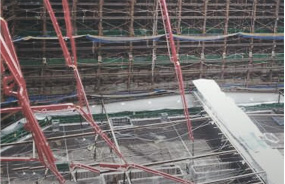

SINCE.
롯데건설의 전신인 평화건업사는 6.25 전쟁 중인 1952년 2월 4일에 설립 되었습니다. 정부 전매청 공사를 수주하는 등 발전의 기반을 확고히 한 후 조국 근대화의 거대한 물결 속에서 고속도로와 각종 토목공사, 포항종합제철공사에 참여하는 등 우리나라 초기 건설역사에 큰 족적을 남겼다고 자부합니다.
1959 - 1977
1978 - 1987
1988 - 1997
1998 - 2003
2004 - 2012
2013 - 2019
1959 - 1977

- 59'
- 02 주식회사 평화건업사로 상호변경
- 62'
- 05 대영토건(주) 흡수합병
- 68'
- 04 토목, 건축 면허 취득 (건설부 제 13호, 14호)
- 69'
- 04 도로포장 면허 취득 (건설부 제 19호)
- 70'
- 11 해외건설진출 (사우디아라비아 도로공사 수주)
- 75'
- 11 해외건설진출 (사우디아라비아 도로공사 수주)
- 77'
- 02 전기통신공사업 면허 취득
- 04 주택건설업 면허 취득
- 10 해외건설업 면허 취득 (건설부 제 34호)
1978 - 1987


- 78'
- 09 롯데그룹에서 경영권 인수
- 10 군납업 등록
- 79'
- 09 (주)롯데건설 흡수합병 (창립기념일)
- 10 (주)롯데평화건업사로 상호변경
- 10 삽교천 방조제 준공 대통령표창 수상
- 80'
- 03 본사사옥 이전 (서울 서초구 잠원동 50-2)
- 81'
- 01 수출입업 허가 취득 (무역협회 제 81042호)
- 03 롯데건설주식회사로 상호변경
- 05 종합건설업을 위한 외국인 투자 인가 (경제기획원 제 361-580호))
- 11 소방설비공사업 등록 (서울시 제-20호)
- 11 철강재설치사업 등록 (건설부 제 59호)
- 82'
- 02 환경오염방지시설업 등록 (환경청 제 87호)
- 85'
- 08 동북댐 준공 석탑산업훈장 수훈
- 86'
- 09 기술연구소 설치
1988-1997
- 88'
- 07 철탑산업훈장 수상 (부회장 신준호)
- 90'
- 06 철탑산업훈장 수상 (사장 이상순)
- 09 해외 종합건설업 면허 취득 (건설부 제 19호)
- 91'
- 11 구로 3복선 준공 대통령 표창 수상
- 92'
- 07 일본동경지사 개설 (일본건설업 면허 : 동경도청 제 89318호)
- 93'
- 07 엔지니어링 활동 주체 신고 (한국 엔지니어링 진흥협회 제 10-130호)
- 94'
- 01 중국 북경지사 개설
- 12 종합감리전문회사 등록 (건설부 제종-50호)
- 95'
- 06 ISO 9001 인증 취득 (독일 TUV)
- 06 말레이시아 현지 법인 설립
- 96'
- 08 안전진단 전문기관 지정 (건교부 제 74호)
- 11 베트남 지사 개설
- 11 ISO 14001 인증 취득 (영국 BVQI)
- 97'
- 05 금탑산업훈장 수상 (사장 이상순) 건협 50주년 기념
- 05 유지관리업 등록 (서울시 제 74호)
- 09 일본 나가타 월드컵경기장 수주 (최초 공공수주)
1998 - 2003

- 99'
- 02 주택공사 우수시공업체 선정
- 06 녹산국가공단 석탑산업훈장 수훈 (사장 임승남)
- 07 일본 도쿄 사전입찰자격 A+ 등급 획득
- 09 창사 40주년
- 12 500억 증자 (납입 자본금 1,234억)
- 00'
- 09 신공항 고속도로 방화대교 준공
- 11 제 6회 국제거래 신용대상 수상 (사단법인 한국중재학회)
- 11 철탑산업훈장 수훈 (인천 신공항 고속도로 준공)
- 12 서울시 친환경 모범기업 선정
- 01'
- 05 한국표준협회 2001년 서비스 대상 아파트 부문 최우수상 수상
- 09 2001년 한국주택문화상 종합대상 수상 (한국주택신문)
- 11 매출 1조원 달성
- 12 서해안 고속도로 준공 대통령 표창 수상
- 02'
- 05 여성사랑 베스트 브랜드상 수상 (우먼타임즈)
- 05 2002년 서비스 대상 아파트 부문 대상 수상 (한국 표준협회)
- 07 국내최초 총괄부문 ‘건설업 KOSHA 2000’ 프로그램 인증 획득
- 09 2002년 시공능력 11위 (1조 1천억원)
- 10 2002년 대한민국 디자인경영대상 디자인 명품 선정 (한국능률협회 컨설팅)
- 12 2002년 자랑스런 한국인상 경제부문 수상 (대표이사)
- 12 2002년 올해의 최우수 창간사외보상 수상 (한국 사보협회)
- 03'
- 01 광안대교 준공 대통령 표창 수상
2004 - 2012

- 05'
- 01 기술혁신경영대상 수상 (한국경제신문사)
- 09 플랜트사업본부 신설
- 10 롯데건설 2010 비전 선포
- 11 중국 북경법인 설립
- 06'
- 04 CI (Corporate Identity), BI (Brand Identity) 전면 개편
- 05 건설혁신 우수사례 대상 (건설교통부)
- 08 모스크바 지사 설립
- 09 한국색채대상 수상 (한국색채학회)
- 07'
- 09 판교 중심상업용지 PF사업 사업자로 선정
- 10 인도 현지법인 설립
- 10 리비아 현지법인 설립
- 12 국가품질경영대회 유공자포상 부문 은탑산업훈장 (이창배대표이사 수상)
- 08'
- 01 베트남 현지법인 설립
- 02 우즈벡 현지법인 설립
- 04 여성소비자가 뽑은 품질 – 서비스 1위 (여성신문)
- 12 수주 10조원 달성
- 09'
- 03 박창규 대표이사 취임
- 06 한국서비스대상 아파트부문 8년 연속 1위 (한국표준협회)
- 09 롯데건설 2015 비전 선포
- 10'
- 10 여성소비자가 뽑은 좋은기업 대상 (5년 연속 수상)
- 10 한국 서비스대상 (9년 연속)
- 11'
- 06 한국 서비스대상 (10년 연속)
- 10 파키스탄 지사 설립
- 11 여성소비자가 뽑은 최고의 명품대상 수상 (6년 연속)
- 12'
- 04 CI (Corporate Identity) 전면 개편)
2013 - 2019

- 13'
- 04 베트남 지사 설립
- 05 여성소비자가 뽑은 좋은기업 대상 (8년 연속 수상)
- 17 한국 서비스대상 (12년 연속)
- 14'
- 02 김치현 대표이사 취임
- 05 여성소비자가 뽑은 최고의 명품대상 수상 (9년 연속)
- 07 한국 서비스대상 (13년 연속)
- 10 롯데월드타워몰 개관
- 15'
- 05 여성소비자가 뽑은 최고의 명품대상 수상 (10년 연속)
- 16'
- 01 주택 임대사업부문 신설
- 04 롯데캐슬 홈페이지 개편
- 17'
- 02 잠실 제2롯데월드 사용승인
- 03 하석주 대표이사 취임
- 04 롯데그룹 창립 50주년 및 롯데월드타워 개관
- 07 한국서비스대상 아파트부문 종합대상 수상 (16년 연속)
- 07 국가고객만족도지수(NCSI) 아파트부문 2위
- 08 정보보호 관리체계(ISMS) 인증 획득
- 12 매출액 5조원 돌파 (5조 3천억원)
- 18'
- 06 국내 건설사 최초 테클라 아시아 BIM 어워드 최우수상 수상
- 11 인도네시아 Riau GFPP Project 착공(준공 2021.5월)
- 11 굿디자인 골드어워드 선정(한국디자인진흥원장상 수상)
- 12 롯데캐슬 3.0 발표
- 19'
- 03 차세대 ERP 시스템(LENCIS 4.0) 오픈
- 03 베트남 건설기술연구원(IBST)과 MOU 체결
- 07 한국서비스대상 18년 연속 종합대상 수상
- 09 창립 60주년 사사발간 및 기념행사 개최
TOP